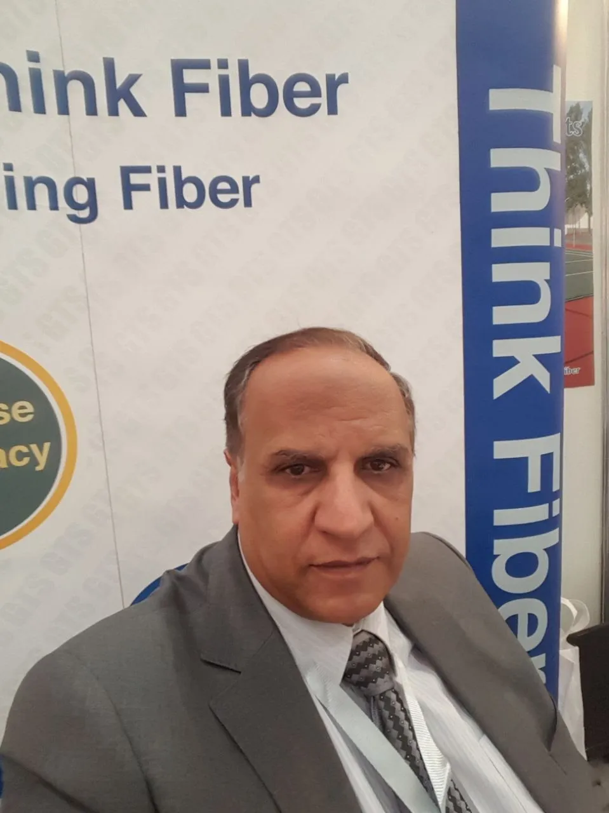

0+
Years Experience
Delivering concrete reinforcement solutions since 2007.
About GTS Fiber
GTS Fiber was established in Saudi Arabia in 2007, delivering advanced Macro and Micro fiber reinforcement solutions for concrete applications across the Kingdom.
For over a decade, we have supported major government and private-sector projects by replacing traditional steel reinforcement with stronger, corrosion-free, and cost-efficient fiber technology.
Our reinforcement systems are used in airports, dry ports, seaports, dams, water channels, industrial flooring, logistics facilities, parking structures, and large-scale infrastructure developments.
Think Right, Think Fiber.
0+
Delivering concrete reinforcement solutions since 2007.
ISO 9001
Internationally certified quality management system supporting consistent performance and customer confidence.
0M+
Fiber reinforcement systems installed across large-scale industrial and infrastructure projects.
We deliver industry-leading fiber reinforcement solutions that raise the standards of concrete performance, durability, and efficiency, enabling engineers and contractors to build stronger, more sustainable projects across Saudi Arabia and the Middle East.
To continue leading the future of fiber reinforcement across Saudi Arabia and the Middle East by accelerating the transition from traditional steel reinforcement to high-performance Macro Fiber and Micro Fiber solutions.
Building expertise in concrete reinforcement through years of innovation and project experience.
Established in Saudi Arabia to provide advanced fiber reinforcement solutions for concrete applications.
Expanded product offerings to support a broader range of construction and industrial projects.
Supported large-scale industrial, infrastructure, and commercial developments across the region.
Today
Providing macro, micro, and steel fiber reinforcement systems for demanding concrete applications.
Trusted by leading contractors, consultants, and project owners to deliver proven fiber reinforcement solutions across Saudi Arabia and the Middle East.
Over 18 years of engineering expertise delivering fiber reinforcement solutions for landmark projects.
Macro Fiber, Micro Fiber, and Steel Fiber solutions trusted across major industrial and infrastructure projects.
Engineering guidance from design through construction, ensuring optimal project performance.
Proven improvements in crack control, durability, and long-term concrete performance.
Advanced fiber reinforcement solutions for industrial, infrastructure, logistics, transportation, and commercial concrete projects across Saudi Arabia and the Middle East.
Built under certified quality management and engineered in accordance with internationally recognized concrete fiber reinforcement standards.
Quality Management System
Certified quality management processes ensuring consistent manufacturing, continuous improvement, and reliable product performance.
View CertificateDesigned to Global Industry Standards
GTS Fiber products are engineered in accordance with internationally recognized concrete fiber reinforcement standards used by engineers and consultants worldwide.
These are internationally recognized engineering standards and design guidelines, not certifications.
Meet the leaders driving GTS Fiber's innovation, engineering excellence, and continued growth across Saudi Arabia and the Middle East.

Chief Executive Officer & Founder
Since founding GTS Fiber in 2007, Ahmad Aittah has led the company to become one of the region's leading providers of fiber reinforcement solutions, delivering innovative systems trusted in major industrial, infrastructure, and high-performance concrete projects across Saudi Arabia and the Middle East.
Managing Director
Fouzan Al-Mohareb plays a key role in driving GTS Fiber's strategic growth, strengthening client partnerships, and supporting the successful delivery of major industrial and infrastructure projects throughout the region.
Partner with GTS Fiber to deliver stronger, more durable, and cost-efficient concrete solutions for industrial, infrastructure, logistics, and high-performance construction projects across Saudi Arabia and the Middle East.
Think Right, Think Fiber